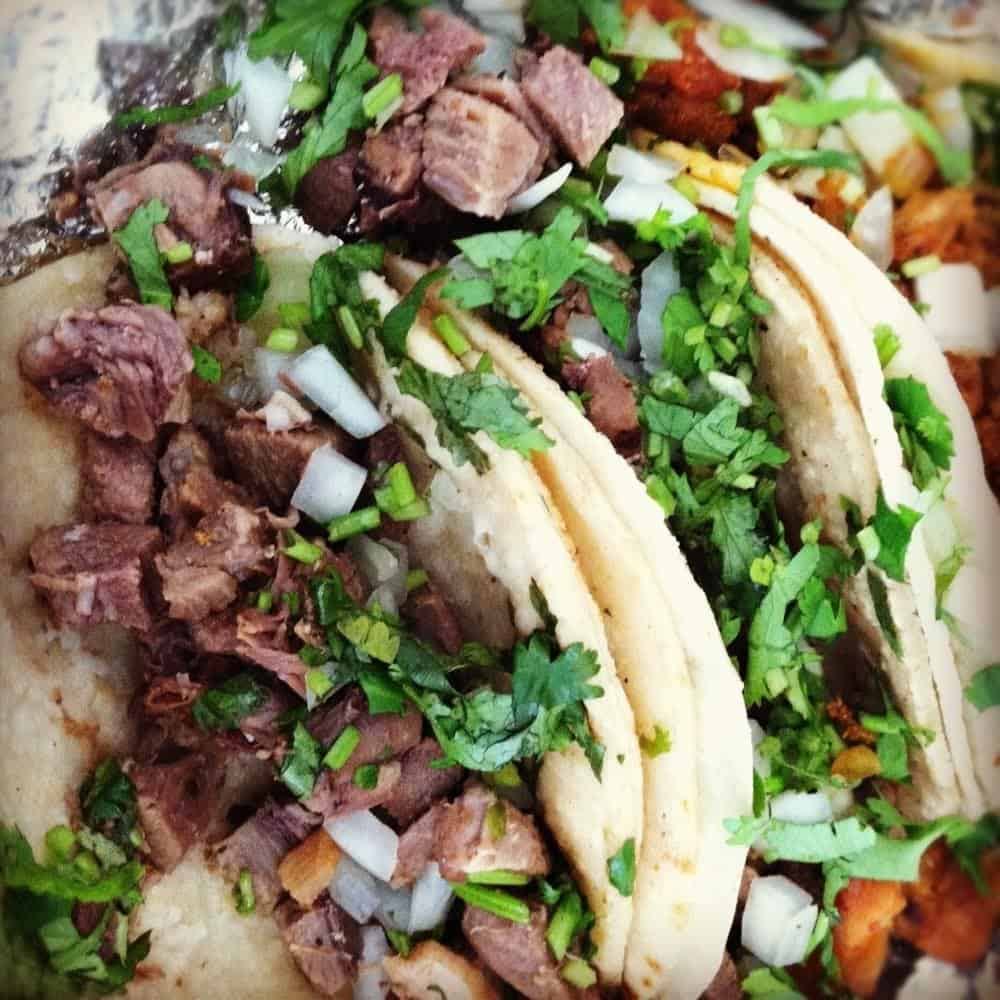

Odin's Recipes
Lengua Tacos (Cow Tongue Tacos)

Description
The name of these tacos make them seem unedible but trust me, when cooked right, they'll probably become your favorite tacos. The meat is very tender and flavorful
and with cilantro and onion, will blow your senses out of the water.
Ingredients
- 1 Beef Tongue
- 1.5 liters of water
- 1 onion
- 3 cloves of garlic
- 1 tsp of salt
- 20 corn tortillas
- 3 limes
- 1 bunch cilantro chopped
- 1 tsp of vegetable oil
Steps
- First, we are going to cook the beef tongue, so we are going to have to wash it and remove any excess fat.
- Next, we will set up a large stockpot with herbs, garlic, and spices and put the meat into the pot.
- Finally once you see the meat is cooked (will look greyish) take it out and cut it into little pieces.
- Set up your pan with some oil and set the meat to cook, once you see it fully cooked, it's time to make the tacos!
- Set up your pan with some oil and flip them tortillas with some tongs (hands if you're not scared to burn yourself a little).
- Chop up some onions and cilantro into thin cuts.
- Grab your tortilla and start layering them with meat , cilantro, onion, and some sauce if you have!
- Enjoy with some lime and a cup of coke and you are all set!